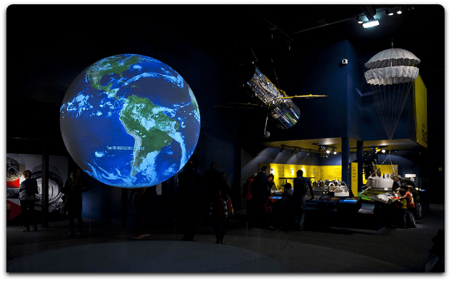
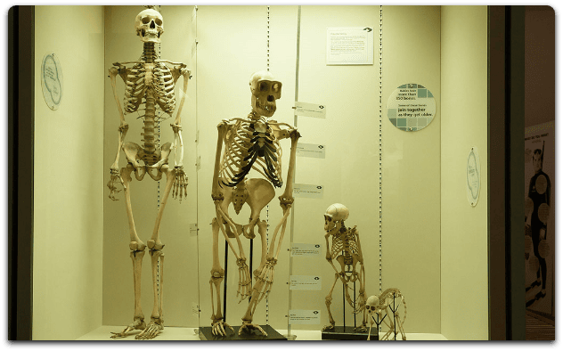
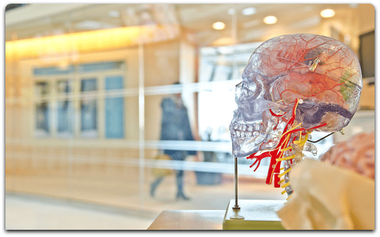

[um-iframe src="https://www.google.com/maps/embed?pb=!1m18!1m12!1m3!1d7987.61120544912!2d10.774623368444288!3d59.96693578188642!2m3!1f0!2f0!3f0!3m2!1i1024!2i768!4f13.1!3m3!1m2!1s0x464171e7f06b20d1%3A0xa4dc7a6bef326423!2sKjels%C3%A5sveien%20143%2C%200491%20Oslo!5e0!3m2!1sno!2sno!4v1646063146082!5m2!1sno!2sno" width="950" height="376" style="border:0;" allowfullscreen="" loading="lazy"]
Visit

The sky above us
Explore the wonders of our cosmos. Our fantastic exhibition, 'The Sky Above Us', explores the night sky and what we can see and know about the universe around us. We'll locate the various constellations and galaxies that can be seen and learn a bit about the early navigators who used the stars to travel by. Follow the journey of our solar exploration: from early Arab traders, to Galileo's telescope, to the latest exploration of the planets in our solar system.

Evolution
For centuries, philosophers and scientists have wrestled with the question of our origins. Where do we come from and how did we get here? Since Darwin proposed his theory of evolution we have had a framework for exploring and understanding our place in this world. Discover the origins of life on this planet and how the species we know today have evolved our time. You can also take some time to meet a few of the creatures who didn't survive, including our Woolly Mammoth, the Dodos, and a number of dinosaurs too.
